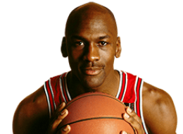

NBA
首页
赛程
球员
精彩集锦
球队
联系我们

迈克尔-乔丹
Michael Jordan
后卫 23号
别名
乔丹
身高
198cm
体重
88.0kg
臂展
218cm
选秀
1984年第一轮第3位被公牛队选中
薪水
-
球龄
15年
国籍
美国
学校
北卡罗来纳大学
球员介绍
迈克尔·乔丹（英文名：Michael Jordan，于1963年2月17日出生），家乡美国纽约布鲁克林，前美国职业篮球运动员，1984年加入NBA，先后效力于芝加哥公牛队和奇才队，现为黄蜂队老板。
篮球之神乔丹，身体素质过硬，投篮基本无死角，至从篮球之神空降NBA以后，NBA就是他的地盘，无论是巅峰时期的无解碾压，还是复出之后通过强大的意志力再夺冠，篮球之神向全世界说证明，只要他出狠劲，冠军就属于他，职业生涯在NBA15个赛季夺得6个NBA总冠军，并且这夺冠就是连续三年夺冠。凭借辉煌的成就以及出色的表现，在1996年顺利入选NBA50大巨星。
乔丹是一名分卫，甚至能胜任小前锋位置，他最擅长利用背身单打后仰跳投完成终结，出色身体素质的他能够轻松完成突破完成终结，并且能够上篮中完成许多高难度的动作。在公牛生涯，身边有着罗德曼、皮蓬等最强辅助，最终顺利帮助球队夺冠。
2003年4月16日，迈克尔·乔丹在职业生涯最后一场奇才主场对阵76人比赛的赛后正式宣布退役 。他被认为是历史上最伟大的篮球运动员 ，他的23号球衣分别被公牛队以及热火队退役。2009年9月11日，迈克尔·乔丹入选奈·史密斯篮球名人纪念堂。
©2021包头师范学院20级国际班ZYN--web项目
任何内容都不得以任何形式被复制、再传播，或篡改。
有任何的建议和意见，都欢迎联络我:1176164611@qq.com